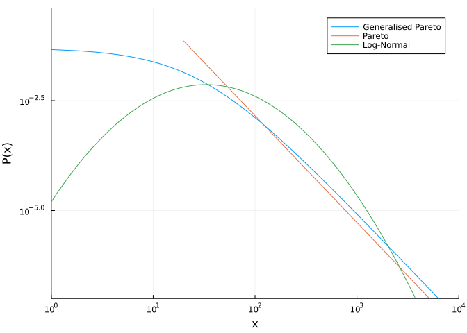
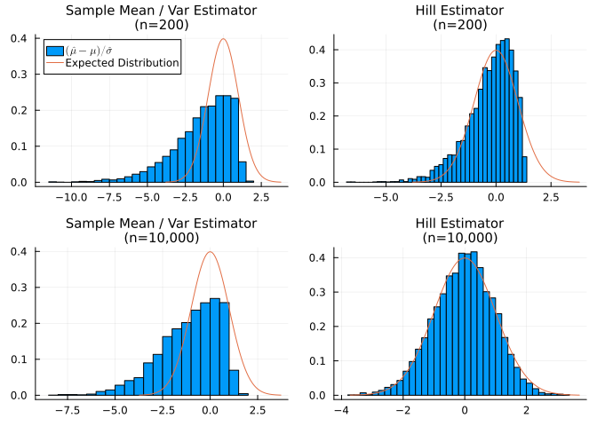
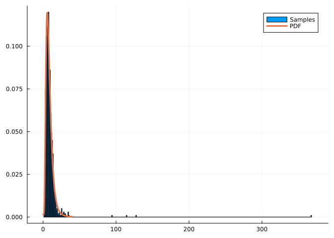
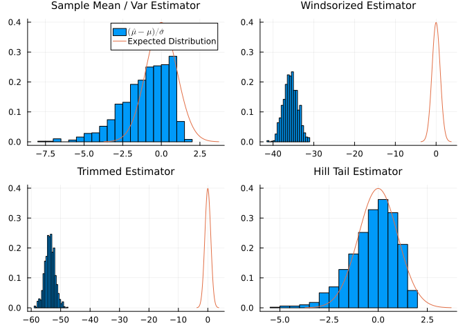

Running A/B tests targeting continuous metrics like revenue per visitor are important for companies to evaluate the financial impact of their interventions
These metrics are often hard from a statistical perspective because they are influenced by outliers, which dramatically hurt experimental power
One way to think about these outliers is to say you don’t want to optimize your website for a minority of extremely high value customers, since this is high risk. This thinking goes towards the ideas of quantitative finance, and I won’t explore this in this post.
Another reason could be data issues. Lets assume we rule that out.
The second way is to say you want to optimize your website for everyone, so you can’t ignore the outliers, but their existance makes standard statistical tests inefficient, so we try to find more efficient estimators that require introducing as little bias as possible.
We can formalise this by assuming that the majority of our sample comes from some well behaved population distribution, but a small number of samples are drawn from a population distribution with infinite variance. For example, the Pareto distribution (Newman 2005).
This contribution from the infinite variance distribution is a problem, because it causes the mixture distribution to also have infinite variance, and therefore the central limit theorem breaks down.
TODO: * Compare trimming, winzoring and pareto smoothing with different cutoffs * Use KDE + Pareto mixture. Then take the mean of the MLE pareto + mean of other data for estimator. Use laplace approx for variance. * Basic check: is Hill better at estimating mean than sample mean?
SECTIONS: 1. Introduction on A/B testing, revenue as a metric, and outliers. Talk about outliers as coming from a distribution with infinite population variance. 2. Infinite population variance: the Pareto distribution. What does infinite variance mean? Why is it a problem for A/B testing? Do a simulation with a simple welches t-test. 3. What can we not do? Log transform, median test, non-parametric test. We care about the mean. 4. Simple solutions: trimming vs windsorizing. These are a bias variance tradeoff. How do they perform? Do the same simulations. 5. What if we model the tail as a pareto distribution directly? Try PSIS and a KDE + Pareto Mixture for MLE. 6. Choosing the best cutoff? KS test, AIC, BIC, Mixture? Mixture doesn’t need a cutoff - that’s nice. 7. Final comparison and results. My recommendation. Key points - choose the cutoff without looking at the results to avoid peaking.
Method:
The following is inspired by the Pareto Smoothed Importance Sampling paper (Vehtari et al. 2015):
Throughout this article we will use two types of distributions to represent distributions with infinite variance, the Pareto distribution and the Generalised Pareto Distribution (GPD).

Figure 1: A comparison between the standard pareto distribution (red), the Generalised Pareto Distribution (blue), and the log-normal distribution (green).
Both of these distributions have a power law tail, and therefore can have infinite variance. This is noticable when plotted on a log-log scale (as is shown in Figure 1), where the tail will be linear. This is shown in contrast to a Log-Normal distribution, where the tail is not Linear, and eventually at very high \(X\) the PDF drops below the power law tails.
While the two types of pareto distribution have the same tail behavior, they differ in how they behave at small values of \(X\). The Pareto distribution is a pure power law until some value, below which the probability mass is 0, while the Generalised Pareto Distribution smoothly transitions away from being power law at low X. The GPD is a more general distribution - with the correct parameters in the GPD you can get back to the Pareto distribution - however it can be harder to fit to data because it has more parameters.
The challenge for A/B testing can be demonstrated by comparing these distributions with the log-normal distribution. While you are always able to calculate the sample variance of any sample of data, whether it is from a population with finite or infinite variance, if the sample is drawn from a population with infinite variance then the sample variance will not converge as the sample size increases. You can see this in the example below, where I sample from a GPD and a LogNormal Distribution and then calculate the sample variance vs sample size.
Figure 2: ?(caption)
This causes problems for the t-test, since it uses the sample variance to estimate the standard error on the mean. So if your data has a power law tail, it’s unlikely that this will give a good estimate.
Power law tails are usualy quantified using the Hill Estimator. We can get the standard error on that estimate too. Let’s compare the Hill estimator + Delta method with the mean and variance estimator for the regular Pareto distribution.
Sample Mean / Var Estimator
(n=200) -1.3965659791961105
1.9111371877365484
Hill Estimator
(n=200) -0.28134915336893007 1.0589227061388358
Sample Mean / Var Estimator
(n=10,000) -1.0553330056952266 1.5698344731984775
Hill Estimator
(n=10,000) -0.03310762675581043 0.9803369870820887

Figure 3: Estimating the mean and the standard error for samples taken from a Pareto Distribution. Using the sample mean and variance (left) and using the Hill estimator (right), for two sample sizes: 200 (top) and 10000 (bottom). Compared with the expected t-distribtuion with d.o.f = samples size - 1.
You can see that the hill estimator performs much better than using the same mean and variance.
So we want to use the Hill estimator instead of the sample mean and variance, but only in the tail. The rest of the distribution is unlikely to be pareto distributed, so the Hill estimator would fail there. This brings us to the next challenge: how do we decide when we are “in the tail”?
To do this, we will use a semi-parametric mixture of the Pareto distribution in the tail and a Kernel Density Approximation (KDE) elsewhere. The KDE bandwidth and cutoff threshold for the tail will be chosen by maximizing the Leave-One-Out (LOO) likelihood.
To test this out, I’ll create a synthetic dataset which is a mixture of a GPD and two lognormal distributions. This will make the main distribution bimodal (and so not too easy for our method) but with a power law tail that gives it infinite variance. This distribution is shown in Figure 4.

Figure 4: Histogram of samples from simulated data (blue), and the theoretical PDF (orange).
Now I can build my method to estimate the mean of that distribution, and the standard error on the mean.
Now lets investigate the tail of this distribution. Does it look like a power law? Can we fit one to it?
Set the tail threshold as the smallest possible value where the KS test p_value >= 0.05
Calculate mean and standard error using Hill estimator for all samples in the tail
Calculate normal mean and standard error for all samples, also based on their weights
Combine the two estimates to get an overal mean and standard error
ITS CLOSE BUT I MUST HAVE SLIGHTLY THE WRONG FORMULAS
Sample Mean / Var Estimator -1.019205622066096 1.5717106001048053
Hill Tail Estimator -0.23894055319894975 1.1651315741813204

Now I will implement my method
Now test it systematically
OLD STUFF
In a lot of situations we have 1-D data which is skewed, and we want to remove the outliers on the right. This happens a lot when running experiments with continuous variables like revenue, where you can have a few data points which are very high revenue and hurt your variance a lot. Removing these outliers improves your variance a lot.
Generate toy dataset
To test these methods, I need some synthetic data. I’ll generate a mixture of a log-normal distribution and a Pareto distribution. The lognormal represents most users, but the Pareto represents the outliers. The pareto is especially problematic for statistics, since it has infinite variance, meaning the CLT won’t work.
Outlier Detection
Now we want to try to identify the outliers that came from the pareto distributon. I’ll try to do this by modelling the data as:
A KDE density estimation. This is for the bulk data, and is non-parametric so it should work on any dataset. I need to choose a kernel, for this data I’ll choose lognormal.
A generalized pareto distribution. This should model the outliers.
References
Clauset, Aaron, Cosma Rohilla Shalizi, and M. E. J. Newman. 2009. “Power-Law Distributions in Empirical Data.”SIAM Review 51 (4): 661–703. https://doi.org/10.1137/070710111.